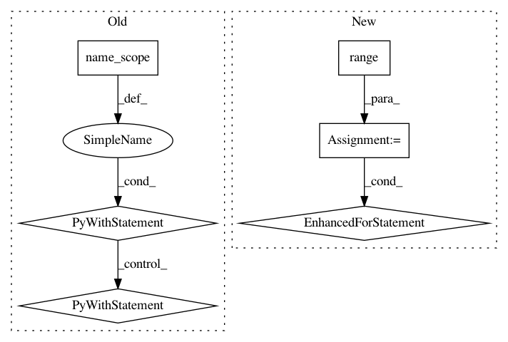

bfd0068e7a0922c06cdeff346a6c6339f98ae256,python/eight_mile/tf/layers.py,BiLSTMEncoder1,call,#BiLSTMEncoder1#Any#,809
Before Change
def call(self, inputs):
inputs, lengths = tensor_and_lengths(inputs)
with tf.name_scope(self.name), tf.variable_scope(self.name):
rnnout, (fwd_state, backward_state) = tf.nn.bidirectional_dynamic_rnn(self.fwd_rnn, self.bwd_rnn, inputs, sequence_length=lengths, dtype=tf.float32)
rnnout = tf.concat(axis=2, values=rnnout)
return self.output_fn(rnnout, ((fwd_state[-1].h, fwd_state[-1].c), (backward_state[-1].h, backward_state[-1].c)))
@property
After Change
rnnout, (fwd_state, backward_state) = tf.nn.bidirectional_dynamic_rnn(self.fwd_rnn, self.bwd_rnn, inputs, sequence_length=lengths, dtype=tf.float32)
rnnout = tf.concat(axis=2, values=rnnout)
encoder_state = []
for i in range(self.layers):
h = tf.concat([fw_state[i].h, bw_state[i].h], -1)
c = tf.concat([fw_state[i].c, bw_state[i].c], -1)
encoder_state.append(tf.contrib.rnn.LSTMStateTuple(h=h, c=c))
encoder_state = tuple(encoder_state)
return self.output_fn(rnnout, encoder_state)
def output_fn(self, out, state):
In pattern: SUPERPATTERN
Frequency: 3
Non-data size: 6
Instances
Project Name: dpressel/mead-baseline
Commit Name: bfd0068e7a0922c06cdeff346a6c6339f98ae256
Time: 2019-11-19
Author: blester125@gmail.com
File Name: python/eight_mile/tf/layers.py
Class Name: BiLSTMEncoder1
Method Name: call
Project Name: dmlc/gluon-nlp
Commit Name: 70a188776f7470c838dd22b1636462b75573a734
Time: 2020-07-16
Author: lausen@amazon.com
File Name: src/gluonnlp/models/roberta.py
Class Name: RobertaEncoder
Method Name: __init__
Project Name: dmlc/gluon-nlp
Commit Name: 70a188776f7470c838dd22b1636462b75573a734
Time: 2020-07-16
Author: lausen@amazon.com
File Name: src/gluonnlp/models/bert.py
Class Name: BertTransformer
Method Name: __init__